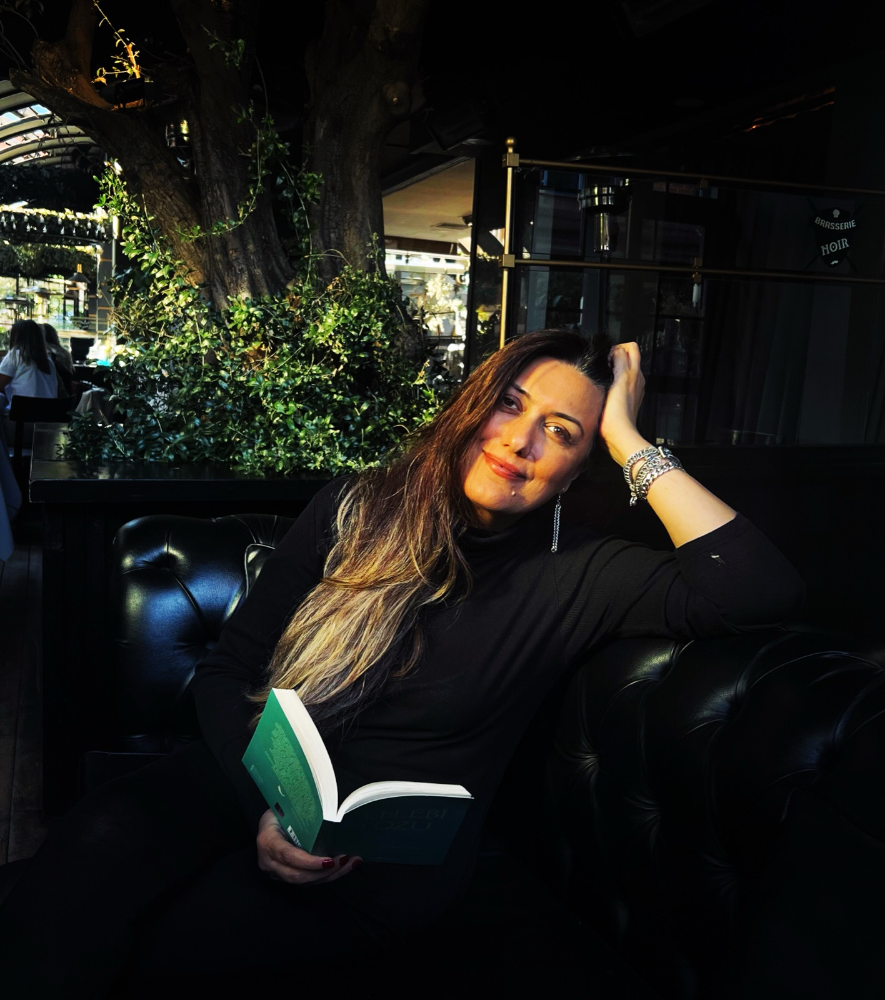
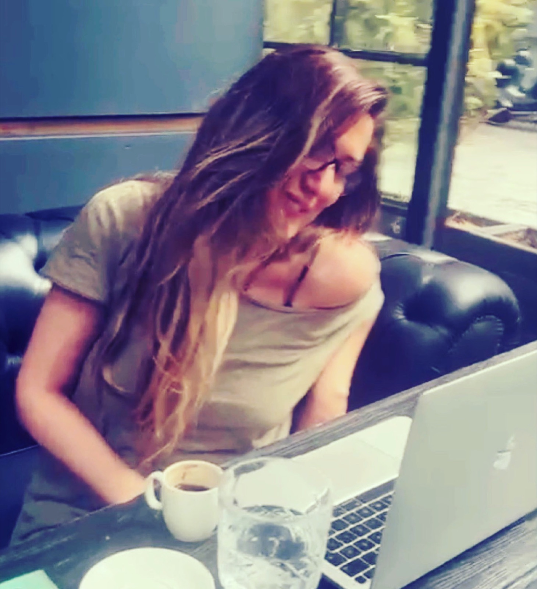
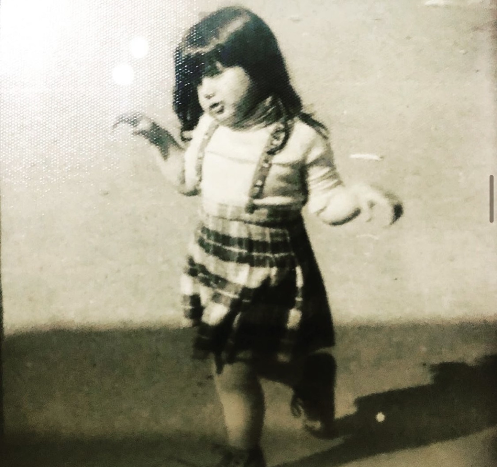
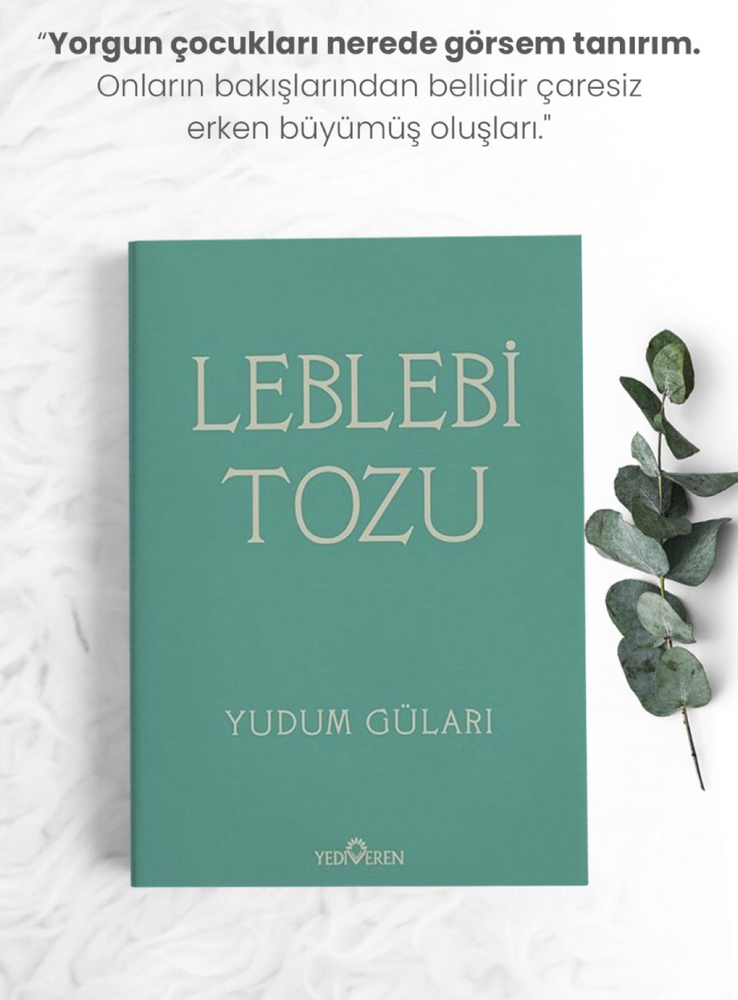
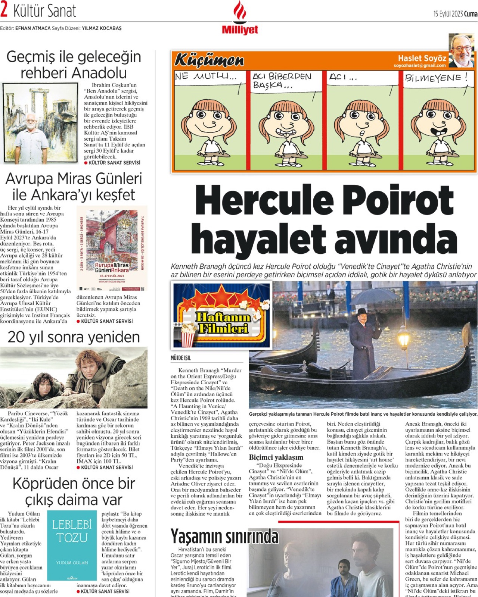
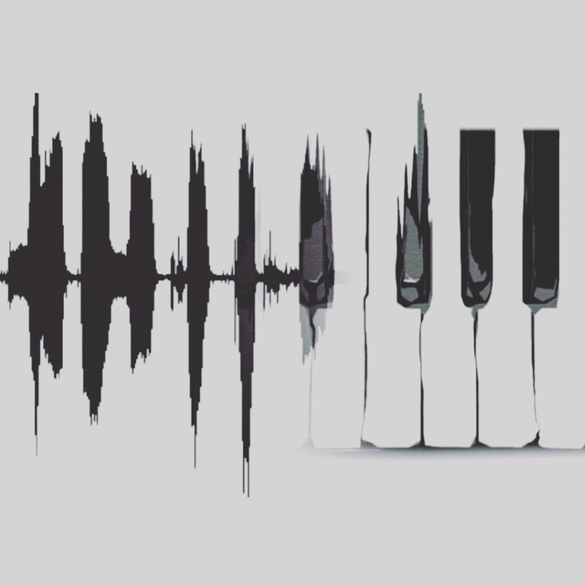
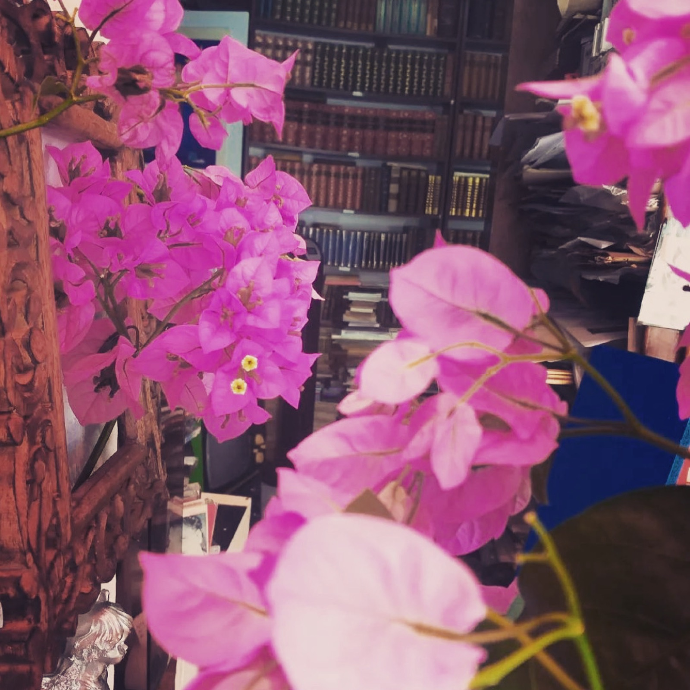
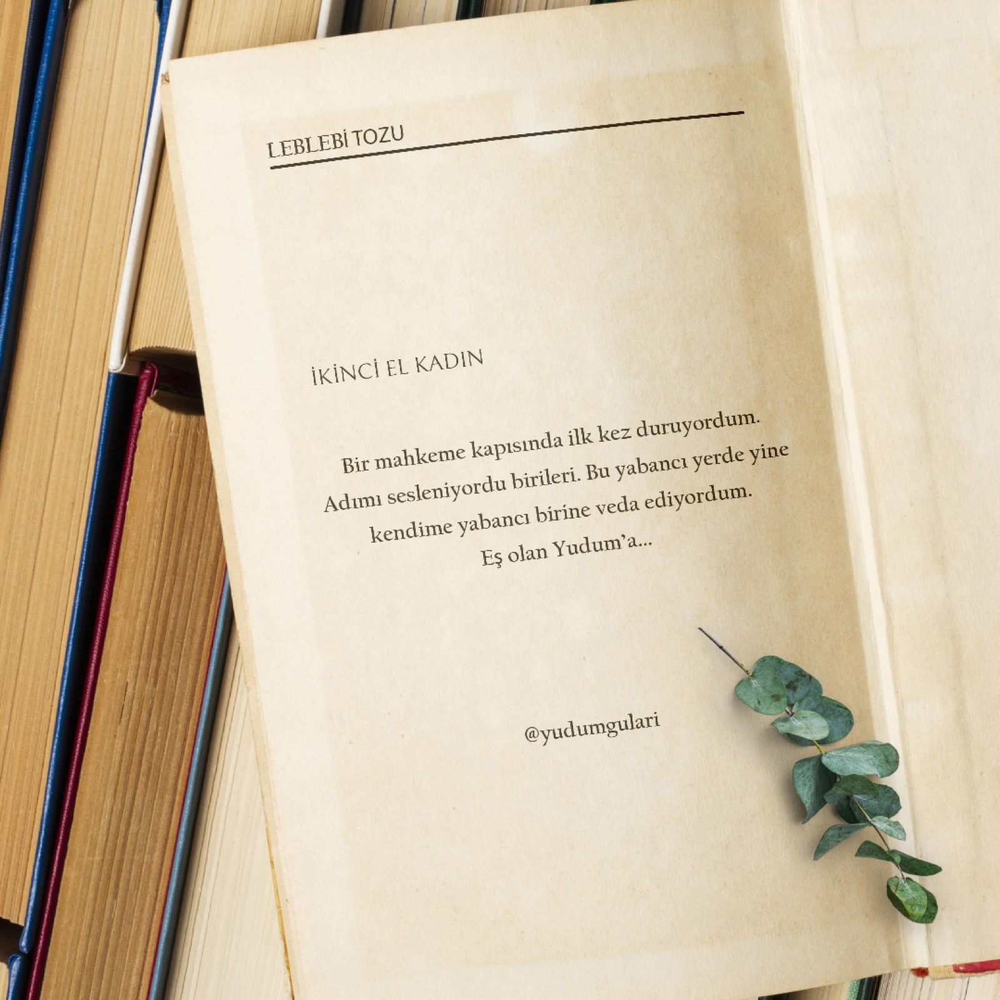

Müzik ve yazı iç içe. Bir duygu avcısı.
İyi hissettiren küçük şeyler
Her gün değişen küçük bir hatırlatma ve haftanın bir daveti. İçeri dönmek için minik bahaneler.
…
…
Ben Kimim
İnsanların sustuklarını okumayı seviyorum. Müzikle yazı hayatımda hep iç içe yaşadı. Hayata dair yazıyorum, tecrübelerimi paylaşıyorum.
İlişkiler ve iletişim, kadınlık, annelik, hayatın zorlarını kolaya çevirmek için yaptığımız çalışmalar, terapiler, meditasyonlar… Beni en çok bunlar büyütüyor. Kendimi bir duygu avcısı olarak görüyorum.
Beni bazen Büyükada'da, denizin ve çam kokusunun içinde; bazen sahnede şarkı söylerken, bazen bir deftere eğilmiş yazarken, bazen de bir yoga matının üzerinde nefes alırken bulabilirsiniz.



Roman · 2023 · Yediveren Yayınları
Ebeveyn-çocuk ilişkileri ve bir genç kızın onları aşma mücadelesi. Yorgun çocukların, erken büyümüş kalplerin romanı.
"Yorgun çocukları nerede görsem tanırım. Onların bakışlarından bellidir çaresiz erken büyümüş oluşları."
"Bir mahkeme kapısında ilk kez duruyordum. Adımı sesleniyordu birileri. Bu yabancı yerde yine kendime yabancı birine veda ediyordum. Eş olan Yudum'a…"

Milliyet Kültür Sanat'ta yer aldıİçimden Geçen
Hayata, ilişkilere ve kendine dönüşe dair notlar. Buraya birlikte yenilerini ekliyoruz.

"İnsanların sözlerinden çok davranışlarını izle" yazdım tahtaya o akşam. Sormayalım, izleyelim, hissedelim…
Devamını oku →
Her insanın biraz deliliğe ihtiyacı vardır. Hayatın tam ortasında, kalbinin sesini dinlemeye…
Devamını oku →
Bir mahkeme kapısında ilk kez duruyordum… Leblebi Tozu'ndan bir bölüm.
Devamını oku →Anlar
Müzik, deniz, kitaplar ve Büyükada… Beni ben yapan kareler.
İletişim
Atölye, söyleşi, iş birliği ya da sadece merhaba demek için… Bana en kolay Instagram'dan ulaşabilirsin.